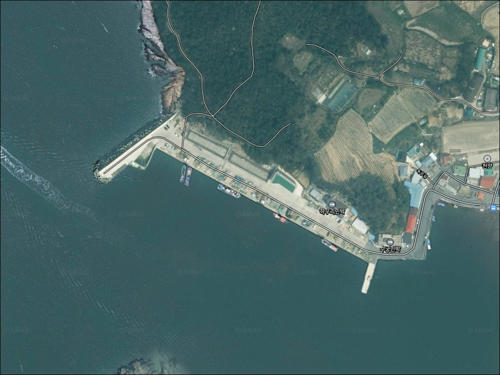
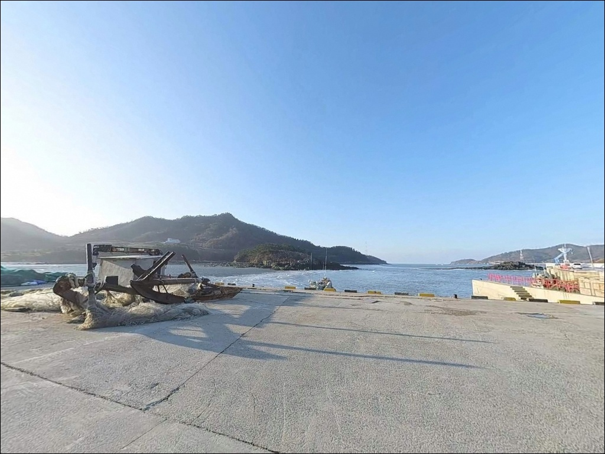
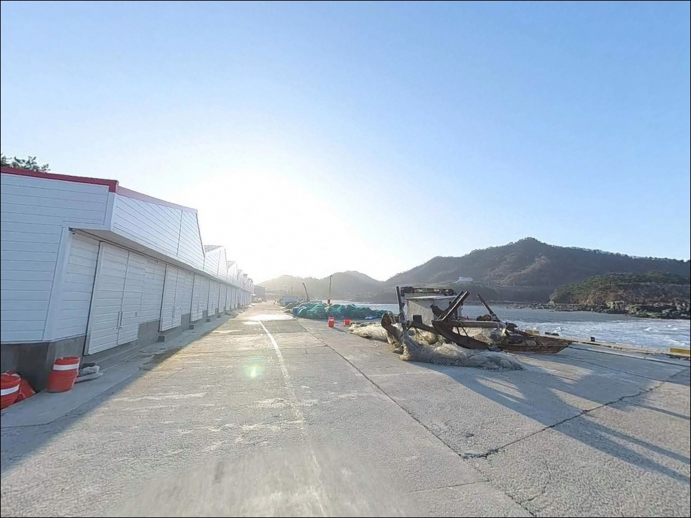
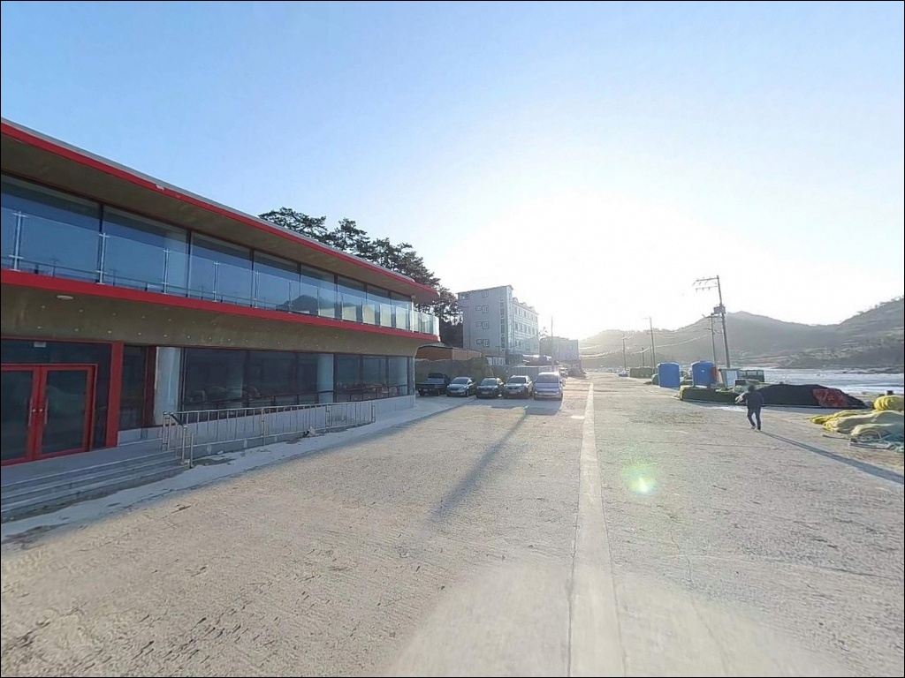
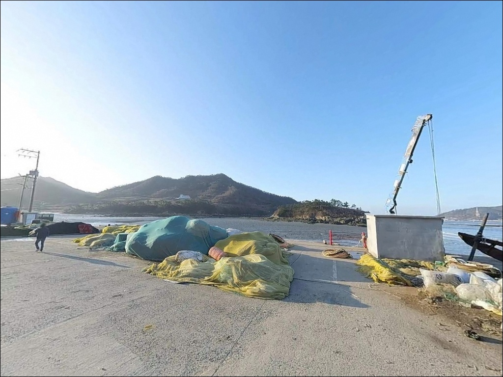
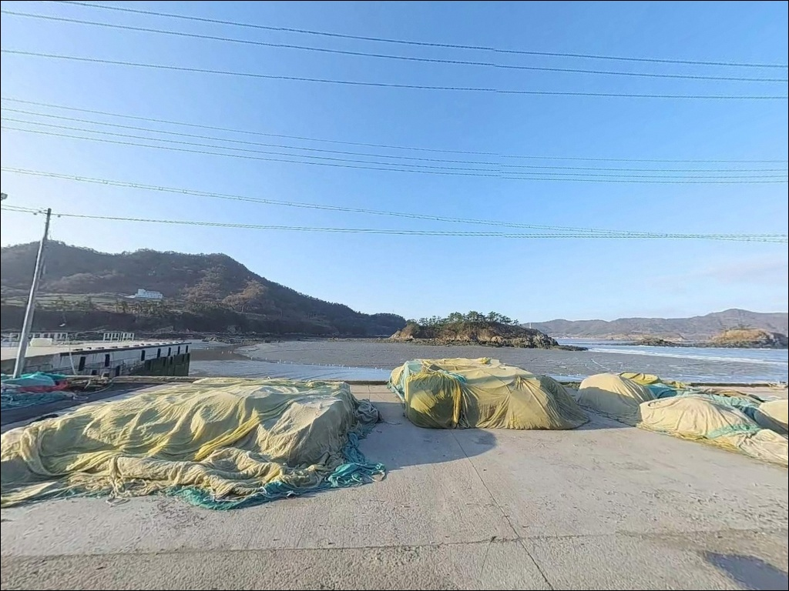
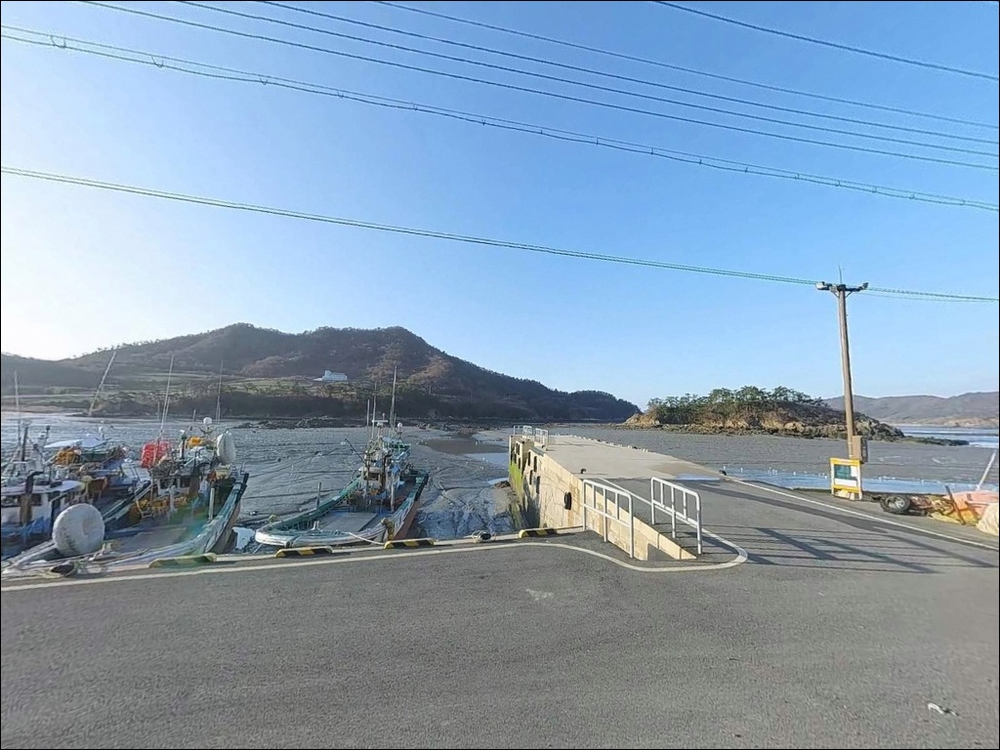
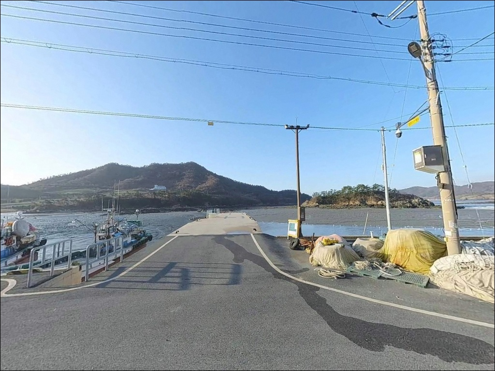
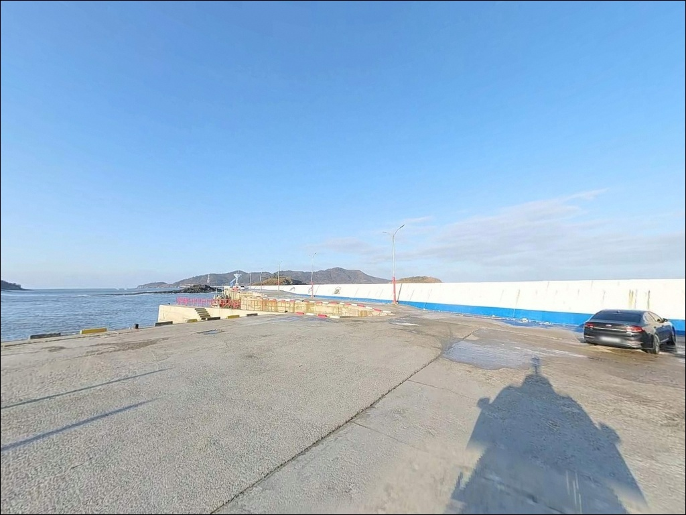

이 페이지에는 광고(제휴 링크 포함)가 있으며, 광고 링크를 통해 구매하면 운영자가 판매 수익 또는 수수료를 받을 수 있습니다. 포인트 사진: 카카오맵 스카이뷰·로드뷰. 이 페이지의 지도·사진 이미지는 카카오맵의 실제 서비스 이미지와 다를 수 있습니다.


하우리항, 임자도 전남 신안군 풍경이 깊은 여운을 남기는 차박, 낚시 해안
포인트 안내
하우리항
전남 신안군 임자면 광산리 514-42
임자도 서측 외해를 마주한 방파제 포인트에서
물때와 바람 방향을 확인하지 않고 도착하면
조류가 너무 세거나 바람이 강해
낚시 자리를 제대로 잡지 못하고 돌아오는
상황이 생깁니다.
서해 도서권 특유의 큰 조차와 외해 노출 구조가
이 포인트의 성격을 결정하는 핵심입니다.
전남 신안군 임자면 광산리에 자리한 하우리항은
2021년 3월 임자대교 개통으로
도선 없이 차량으로 직접 들어올 수 있게 된
임자도 북서부의 소규모 어항입니다.
방파제와 선착장이 결합된 구조에
외해 방향으로 열려 있는 외항형 포인트로,
조류 소통과 수심 변화가 뚜렷한 지형입니다.
이 글은 하우리항의 진입 환경, 차박 체류 조건,
낚시 지형 여건, 대안 포인트에 집중합니다.
특정 어종 조황 보장이나 시설 운영 여부는
이 글의 범위에 포함되지 않습니다.

1. 진입 동선과 포인트 접근성
임자도는 2021년 3월 임자대교 개통 이후
차량으로 육지에서 직접 진입이 가능합니다.
기존에 도선으로 30분 이상 걸리던 지도~임자 구간이
차량으로 3분 안에 이동 가능해져,
당일 출조와 1박 출조 모두 선택지가 넓어진 포인트입니다.
임자대교를 건너 섬 내부 도로를 타고
북서쪽 광산리 방향으로 이동하면 하우리항에 닿습니다.
광산리까지 이어지는 도로는
농경지와 어촌 마을을 지나는 경로로,
일부 구간은 폭이 좁아
대형 차량 진입 전 위성지도로 도로 상태 확인이 먼저입니다.
주차는 방파제 입구와 선착장 인근 공터를
활용하는 것이 기본입니다.
소형 어항 구조상 대형 차량이 회차할 만한
넉넉한 공간을 기대하기 어려울 수 있어,
어선 출입 동선을 확인한 뒤
자리를 잡는 순서가 맞습니다.

2. 차박 환경과 야간 체류 여건
하우리항 일대는 민가 밀집도가 낮은
소규모 어촌 마을 분위기입니다.
야간 차량 통행이 많지 않고
어선 출입 동선과 거리를 두면
조용한 체류가 가능한 구조입니다.
항구 주변에 민박·횟집이 운영되는 곳이 있어
완전히 외진 분위기와는 다른 편입니다.
서해 외해 방향으로 열린 구조인 만큼
서풍 계열의 바람이 강한 날에는
방파제와 선착장 쪽에서 바람 체감이 큰 포인트입니다.
차박을 겸한 출조라면
풍속 5m/s 이상이면 외항 방향 체류 위치를
다시 판단해야 하는 기준으로 삼는 것이 맞습니다.
야간에는 어촌 선착장 시설 범위 내
제한적인 조명만 있어
방파제 끝단은 어두운 편입니다.
개인 조명 장비는 필수이며,
외해 노출 구간에서의 야간 이동은
미끄럼 방지 신발 착용을 기본으로 합니다.


3. 주변 편의시설 및 인프라 현황
하우리항 인근 광산리 마을에
민박과 횟집이 운영되고 있어,
현장에서 식사나 숙박 선택지가
완전히 없는 곳은 아닙니다.
방문 전 운영 여부는 따로 확인하는 것이 좋습니다.
편의점이나 마트는 하우리항 인근에서
기대하기 어렵습니다.
임자도 내 주유소는 이용이 가능하며,
진리항 인근 임자면 소재지 방향으로 이동하면
식료품과 낚시 소품을 구할 수 있는
기본 생활 인프라를 만날 수 있습니다.
원거리 도서 지역 특성상
식수·얼음·여분 채비는
육지 출발 전에 모두 갖추는 것이
가장 안전한 방법입니다.
응급 상황을 대비한
비상약품과 여분 연료도 사전에 챙기는 편이 좋습니다.

4. 진입 전 반드시 챙겨야 할 준비사항
하우리항 방문 전 가장 먼저 할 일은
바다타임에서 임자도 기준 물때를 확인하는 것입니다.
서해 도서 지역 특성상 조차가 크고
사리 전후에는 조류가 빠르게 세집니다.
조금 전후나 만조·간조 전후 1~2시간 타이밍에
자리를 잡는 것이 이 수역에서의 기본 공략 방식입니다.
임자도 북서부는 외해로 열려 있어
기상 변화가 빠른 편입니다.
출조 당일 아침 기상청 바다날씨 예보를
다시 한번 확인하는 습관이 필요하며,
풍속이 예보보다 올라가면
낚시 자리 선택 자체를 바꿔야 하는 상황이 생깁니다.
방파제 외항 쪽은 밑걸림 가능성이 있는 지형이라
여분 채비는 넉넉하게 준비하는 것이 맞습니다.
야간 낚시를 계획한다면
헤드랜턴과 여분 배터리, 미끄럼 방지 신발은 필수입니다.
구명조끼는 방파제 진입 시 반드시 착용해야 합니다.
하우리항은 어선이 출입하는 선착장입니다.
어선 작업 구역과 계류 구간을 피해
자리를 잡는 것이 기본 매너이며,
가져온 쓰레기는 반드시 되가져오는 것이
도서 지역 낚시터에서 지켜야 할 원칙입니다.

5. 외항 방파제에서 낚시 반응이 달라지는 지형 조건
하우리항은 임자도 북서부 해안에 위치하며
서해 외해 방향으로 열린 방파제와
선착장이 결합된 구조입니다.
내항 쪽은 어선 정박이 주 기능이며,
외항 방파제 끝단 쪽이 조류 흐름을 직접 받는
낚시 자리입니다.
방파제 끝단으로 갈수록 수심 변화가 생기는 구조입니다.
이런 수심 드랍 구간은 어종이 조류를 타고
이동하는 길목 역할을 합니다.
임자도 서측 해안 일대는 서해 도서권 특유의
측류와 조류 소통이 있는 지형으로,
방파제 끝단은 조류 영향이 집중되는 자리입니다.
선착장 안쪽 내항은 파도와 조류 영향이 적어
잔잔한 수면 상태가 유지되는 편입니다.
간조 시에는 수심이 얕아지는 구간이 생길 수 있어,
진입 전 물때를 기준으로 낚시 자리를
정하는 순서가 먼저입니다.
출조 전 최신 조황은 반드시 검색해 확인하시기 바랍니다.


6. 포인트에 어울리는 낚시 스타일
하우리항 지형 구조에 가장 잘 맞는 방식은
원투낚시입니다.
방파제 끝단 외해 방향으로 채비를 멀리 던져
봉돌 무게로 조류를 버티면서
수심 드랍 구간 바닥을 천천히 탐색하는 방식이
이 포인트 구조에 맞는 접근입니다.
붕장어·우럭·노래미 등 서해권 바닥 어종을
기대해 볼 수 있는 지형입니다.
루어낚시도 외항 방파제 끝단과
선착장 외곽 수로 구간에서 시도해 볼 만합니다.
소프트베이트 계열 지그헤드 채비로
테트라 주변과 방파제 꺾이는 지점을
천천히 탐색하는 방식이 어울리며,
농어·광어·우럭류를 기대해 볼 수 있는
지형 조건을 이 포인트는 갖추고 있습니다.
릴찌낚시는 내·외항 경계 구간이나
방파제 꺾이는 지점에서 조류 흐름을 타며
감성돔·숭어 계열을 노리는 방식입니다.
조류 소통이 있는 타이밍에 집중하면
찌가 자연스럽게 흘러가는 자리를 만들 수 있습니다.
임자도 서쪽 외해 방향으로 열린 방파제에서는

7. 대안 포인트와 플랜 B 동선
하우리항 조류가 너무 강하거나
바람이 심해 낚시 자리를 잡기 어려울 때는
임자도 내 진리항이 첫 번째 대안입니다.
하우리항보다 접근성과 인프라가 정비된 편이라
방파제 구조와 수심 여건을 비교해 보기 좋은
포인트입니다.
임자도 남쪽으로 이동하면
대광해수욕장 일대가 있습니다.
12km 규모의 백사장이 펼쳐지는 해변으로,
서프 스타일의 원투낚시가 어울리는 지형입니다.
주차 공간이 갖춰져 있어
차박 겸 출조의 대체지로도
활용 가능한 후보입니다.
임자도 북쪽의 전장포항은
조황 정보가 더 많이 알려진 포인트입니다.
하우리항을 처음 찾는 낚시인이라면
하우리항을 시작점으로 삼고
진리항이나 전장포항을 병행 동선으로 설정하는 방식이
임자도 출조를 효율적으로 운용하는 방법입니다.

물때와 바람 예보를 갖추면
하우리항이 다르게 보입니다
임자대교 개통으로 접근이 쉬워진 임자도에서
하우리항은 아직 많이 알려지지 않은
서쪽 외해형 방파제 포인트입니다.
원투낚시와 루어낚시를 함께 운용하고 싶거나
릴찌낚시로 조류 흐름을 노리는 낚시인에게
방파제 끝단 지형 조건은 공략해 볼 만한 구조입니다.
반면 물때 계산 없이 사리 전후에 도착하거나
바람 예보를 확인하지 않고 서풍이 강한 날 찾아가면
낚시는 물론 차박 체류도 불편해지는 포인트입니다.
물때 확인, 바람 예보, 자급 준비,
이 세 가지가 하우리항 출조를
만족스럽게 만드는 기준입니다.
조용한 섬마을 어항에서 낚시를 마치고
차 안에서 하룻밤 머무는 출조를 생각하는 분이라면,
임자도 하우리항은 먼저 답사해 두면 좋을
포인트입니다.